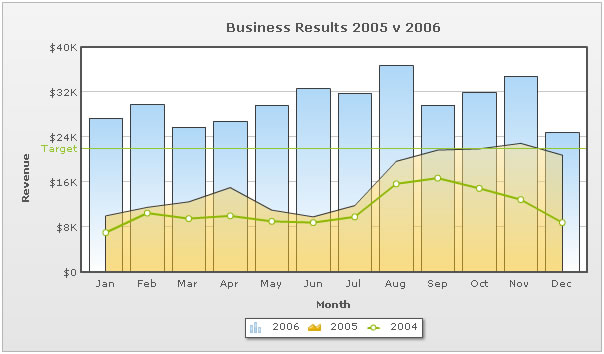
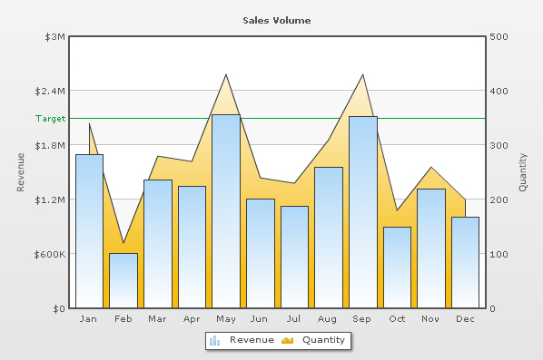

| Combination Chart XML |
Combination charts are helpful when you want to plot multiple chart types on the same chart, or use two different scales for two different axes. FusionCharts XT offers two categories of Combination Charts:
FusionCharts XT has both 2D and 3D combination charts. Shown below is a 2D Single Y Combination Chart. |
|  |
In the above chart, all the data-series are plotted against the same (primary) y-axis. Each dataset has an attribute renderAs that specifies whether the series has to be rendered as column, line or area. The XML for the above chart looks as under: |
<chart caption='Business Results 2005 v 2006' xAxisName='Month' yAxisName='Revenue' showValues='0' numberPrefix='$'>
|
An example of a 2D Dual Y Combination Chart looks as under: |
|  |
As you can see in the image above, we are plotting a monthly sales and quantity chart. On the x-axis, we have the month names. Now, we have two y-axes in this chart:
For Dual Y Axis combination charts, it is necessary to provide at least two datasets - one for the primary axis and the other for the secondary axis. If you do not provide this, the chart will not render properly. The XML for the above Dual Y Axis chart looks as under: |
<chart caption='Sales Volume' PYAxisName='Revenue' SYAxisName='Quantity' showvalues='0' numberPrefix='$' areaOverColumns='0'> |
| Brief Explanation |
The XML structure for a combination chart is very similar to that of multi-series chart. So, we will not be discussing it all over again. Rather we'll discuss the differences between them. |
| Single Y Axis Combination Charts |
Single Y Axis Combination Charts allow you to plot multiple datasets as different types of plots (columns, lines or areas), but against the same y-axis (primary). Since all the datasets belong to the same primary axis, the number formatting properties do not change across them. To select which dataset should be rendered as what plot type, you can use the renderAs property as under: <dataset seriesName='2005' renderAs='Area'> |
| Dual Y Axis Combination Charts |
| Dual Y Axis Combination Charts have two y-axes. Each y-axis can have its own scale and number formatting properties. You can also explicitly set the y-axis lower and upper limits for both the axes. You choose the axis for each dataset using the parentYAxis property of the <dataset> element. This attribute can take a value of P or S. P denotes primary axis and S denotes secondary axis. Like, in our above example, we have the revenue dataset set on primary axis: <dataset seriesName='Revenue' parentYAxis='P'> and the Quantity dataset set on secondary axis: <dataset seriesName='Quantity' parentYAxis='S'> In Dual Y 3D Combination Charts, the column chart by default plots on the primary axis and lines on the secondary. To switch this, you can use <chart primaryAxisOnLeft='0' ...>. You can have more than one primary or secondary datasets but at least one of each is required. Each trend-line also needs to be associated with an axis, against which it will be plotted. Example: <trendLines> <line parentYAxis='S' or 'P' ... startValue='324' .../> By default, they conform to the primary axis. |